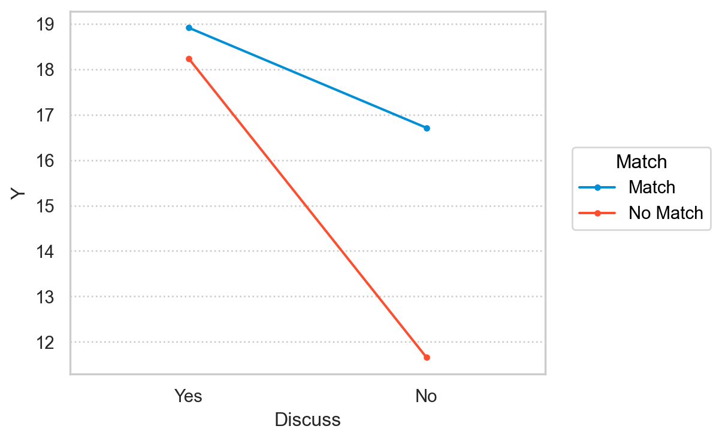

준실험 설계와 종단 설계 (12장)
상담연구방법론, by Heppner, P. P., Wampold, B. E., Owen, J., Thopso, M. N.
- 현장에서 진실험 설계를 만족하기는 어려움.
- 참여자의 무선 할당이 제한될 때, 준실험이라고 부르며, 내/외적 타당도를 높이기 위한 방안을 검토
- 창의적인 설계를 요구하며,
- 통계적 통제와 여타 절차를 통해 보완하도록 함.
역사적 개관
- 상담 성과에 대한 초기 연구들이 주로 준실험 설계를 했음.
- Klingelhofer (1954)의 연구
- 학업 조언이 학업 성취에 미치는 영향을 연구
- “학사경고”를 받은 학생을 세 집단으로 구분: A, B에 대해서만 무선 할당
- A: 회기당 1시간씩 4회기 상담
- B: 1회기의 상담만
- C: 상담 없음, “이전 연도”에 학사경고를 받은 학생
- 상담 조건(A, B) / 비상담(C) 조건에 무선 할당되지 못했음.
- “학사 경고”에 대한 규정이 변화되지 않았다는 점에서 동질적인 집단으로 가정
- 결과: A와 B는 유의한 차이가 없으나 C와는 유의한 차이가 존재
- 제한점: 처치를 받기 전, (A, B)와 C 집단 간에 차이가 존재할 수 있음.
준실험 설계를 선택할 때 고려해야 할 점
1) 비용, 2) 선발 문제, 3) 윤리적 문제, 4) 적절한 통제집단을 사용할 수 없음
비용
- 진실험 연구는 많은 시간과 자원이 소요됨
- 처치 집단과 통제 집단으로 무선 할당하려면, 모두에게 대가를 지불해야 함.
- 이미 존재하는 자연발생하는 장소나 장면들을 그대로 이용하여, 무선 할당에 필요한 자원과 시간을 절약할 수 있음.
참여자 선발
- 현장 연구에서 발생하는 무수한 문제들로 인해 참여자 선발은 어렵고 복잡함.
- 예를 들어, 처지집단에 참여할 수 있는 시간대가 참여자별로 다른 수 있음; 오전, 오후, 저녁 등
- 또는, 고등학교의 학급과 같은 이미 존재하는 집단을 활용
- 선발에 따른 집단 간의 차이는 여러 내적타당도를 위협할 수 있음.
- 처치 이전의 차이 뿐 아니라; 처치의 효과가 아닌 집단의 차이로 귀인될 수 있음.
- 그 차이가 “처지와 상호작용”하여 결과를 왜곡할 수 있음; 역사, 검사, 회귀, 탈락 등
윤리적 문제
즉각적인 서비스를 요하는 참여자들(상담 또는 의학적 도움)를 대상으로 할 때,
- 자주 발생하지 않는 암과 같은 질병의 경우, 참여자를 확보하여 무선할당 하는데 오랜 시간이 걸리고,
- 기다리는 동안, 치료를 유보하는 것은 윤리적으로 문제가 될 수 있음.
적절한 통제집단 이용 불가능
- 통제집단을 사용할 수 없는 경우, 사전/사후 검사를 통해 처치의 효과를 추론할 수 있음.
- 여러 시점에서 처치와 관찰이 이루어져 내적 타당도를 높일 수 있고,
- 이를 시계열 또는 종단 설계(time-series, longitudinal design)라고 함.
- 무선 할당, 집단간 비교는 없음.
비동등 집단 설계
Non-equivalent groups design
해석할 수 없는 비동등 집단 설계
사후 검사만 있는 단일 집단 설계: \(X_1 ~ O_1\)
- 처치에 따른 변화를 확인할 수 없음.
- 통제집단이 없으므로 성숙, 역사로 인해 발생하는 변화를 확인할 수 없음.
사후 검사만 비교하는 비동등 집단 설계: \(\begin{cases} Non~R: ~ X_1 ~ O_1 \\ Non~R: ~~~~~~~ O_2 \end{cases}\)
- 차이 \(|~O_1 - O_2~|\)가 처지 전 집단 간 차이에서 비롯된 것인지 처치의 효과인지 알 수 없음.
- 처치 전 검사(pre-test)가 없으므로 집단 간 차이도 확인할 수 없음.
- 예를 들어, 6학년 두 반을 비교하는 경우, 한 달 후 처치를 받은 반의 우울 수준이 더 낮다면,
- 교장이 사회적 기술 수준에 따라 학급을 배정했을 수 있음.
- 통제 집단의 학급 학생들이 사회적 기술 수준이 낮을 수 있음.
- 사회적 기술 수준과 우울 간의 관계가 보고 되고 있음.
- 따라서, 처지 학급이 우울 수준이 낮은 것은 통제 학급의 사회적 기술 수준이 낮기 때문일 수 있음.
단일 집단 사전-사후 검사 설계: \(O_1 ~ X ~ O_2\)
- 사후 검사만 있는 단일 집단 설계보다는 나음.
- 처지 전후의 차이를 무엇에 귀인할 수 있을지 모호함.
- 두 검사 사이에 발생할 수 있는 사건들로 그 변화를 설명할 수 있음; 역사
- 두 검사 사이에 자연스럽게 일어나는 성장/발달에 의한 것일 수 있음; 성숙
- 처치가 특정 문제로 인해 실시되었다면 (예. 학사경고를 받은 학생들에게 실시)
- 문제가 있는 학생들이 처치를 받았기 때문에, 자연스럽게 사후 검사 점수가 향상되었을 수 있음; 평균으로 회귀
해석 가능한 비동등 집단 설계
사전-사후 검사 비동등 집단 설계: \(\begin{cases} Non~R: O_1 ~ X ~ O_2 \\ Non~R: O_3 ~~~~~ O_4 \end{cases}\)
- 사전 검사를 통해 종속변수 또는 종속변수와 관련된 변수에 대한 집단 간 유사성을 확인할 수 있음.
- 사전 검사의 차이 \(|~O_1 - O_3~|\)가 정확히 0이 아님을 주의.
- 이 차이가 규준 집단에서 발생할만한 정도임을 통계적으로 확인할 필요; 예를 들어, 표준편차 1보다 작다 등
- 처치의 차이가 역사, 성숙, 검사와 같은 요인으로 귀인되지 않을 것임.
- 하지만, 집단 간 비동질성(선발)이 이와 같은 요인과 상호작용할 수 있음.
- 예를 들어, 한 집단이 더 빠르게 성숙할 수 있음.
- 한 집단에서만 역사적 사건이 효과를 나타낼 수 있음.
- 다른 집단에서 사전 검사의 민감화 효과가 처치와 다르게 반응/작동할 수 있음.
- 다른 집단에서 민감화 효과 자체가 다르게 나타날 수 있음.
대리 사전 검사(proxy pre-test)로 대체: \(\begin{cases} Non~R: O_{A1} ~ X ~ O_{B2} \\ Non~R: O_{A1} ~~~~~ O_{B2} \end{cases}\)
- 사전 검사의 민감화 효과에 대한 우려가 있거나, 사전 검사를 실시할 수 없는 경우
- 대리 사전 검사(proxy pre-test measure)를 활용할 수 있음.
- 종속변수의 측정도구와 유사하지만 동일하지 않는 측정도구를 사용
추가적 사전 검사를 도입: \(\begin{cases} Non~R: O_1 ~ O_2 ~ X ~ O_3 \\ Non~R: O_1 ~ O_2 ~~~~~ O_3 \end{cases}\)
- 선발과 성숙의 상호작용을 확인 가능
- 두 집단 간에 \(|~O_1 - O_2~|\)의 차이는 서로 다른 비율로 성숙하고 있는지 검토하는데 활용
- 실제 연구에서 거의 사용되지 않으나 고려해 볼 것.
역처치(reversed-treatment) 사전-사후 검사 비동등 집단 설계: \(\begin{cases} Non~R: O_1 ~ X^{+} ~ O_2 \\ Non~R: O_1 ~ X^{-} ~ O_2 \end{cases}\)
- \(X^{+}\): 어느 한 방향으로 영향을 미칠 것으로 기대되는 처치
- \(X^{-}\): 그 반대 방향으로 영향을 미칠 것으로 기대되는 처치
예를 들어, 집단 상담에서 구조를 부여하는 것이 내담자의 치료 효과를 증진시킬지 혹은 감소시킬지에 대한 효과를 검증하고자 한다면,
- 어떤 치료학파는 구조가 없는 것이 집단의 구성원에게 불안을 초래하는데, 이 불안이 집단 구성원들간의 작업을 향상시키는데 필요요소라고 주장하는 반면, 어떤 학파는 불안이 집단 작업을 방해한다고 주장함.
- A: 구조를 부여하지 않는 모호한 안내를 하는 집단: 불안을 높게 경험하여 구성원 간의 작업이 향상될 것으로 기대
- B: 그 반대로, 구체적인 안내와 정보를 제공받는 집단: 불안을 낮게 경험하여 더 낮은 수준의 상호작용을 경험할 것으로 기대
- 사후 검사에서 각 처치가 예측된 방향으로 움직였는지를 확인
- 선발과 성숙의 상호작용의 위협을 낮춤
- 두 집단이 서로 반대 방향으로 성숙될 것으로 기대하기 여러움.
윤리적 문제: 예를 들어, 내담자를 더 우울하게 만드는 처치를 하는 것은 비윤리적.
거의 활용되고 있지 않으나, 창의적인 설계를 고려해 볼 것.
실제 연구에 적용하기 12.2
p.300을 읽고, 질문에 답해보세요.
비동등 집단 설계의 예: Owen 등(2014)의 연구
작업동맹에 대한 두 가지 독립변수에 대한 효과를 알아보고자 “대리 사전 검사”를 활용
- 대학상담 센터에서 상담을 종결한 인종/민족 소수자인 내담자 120명을 대상으로 함.
- 다음의 조건들에 무선할당하지 않고, 자연발생적으로 나타난 집단을 활용
- 독립변수 1: 상담자 인종 짝짓기 여부
- 문화적 기대가 작업동맹에 긍정적 기여를 할 것으로 기대
- 독립변수 2: 인종/민족에 대한 미시공격(microaggression)에 대한 내담자의 지각에 대한 논의 여부
- 미시공격 경험에 대한 논의가 작업동맹에 긍정적 기여를 할 것으로 기대
- 미시공격을 경험하지 않은 내담자가 경험한(논의 유/무) 내담자가 더 높은 작업동맹을 경험할 것으로 기대
- 두 변수의 상호작용 효과도 검증
- 민족 짝짓기가 이루어지지 않은 쌍 가운데 미시공격을 경험을 논의하지 않은 경우 가장 낮은 수준의 작업동맹을 경험할 것으로 기대
- 
- 대리 사전 검사: 회기 수, 내담자의 심리적 안녕 >> 공변수(covariate)로 활용
- 두 독립변수가 분석에 미쳤을 수 있을 처치 전 차이를 통계적으로 통제
- 동일한 인종의 상담자/내담자 쌍이 이루어진 이유?
- 미시공격에 대해 왜 논의했는가?
- 두 독립변수가 분석에 미쳤을 수 있을 처치 전 차이를 통계적으로 통제
- 결과
- 짝짓기의 유무에 따른 작업동맹의 유의한 차이가 없었음
- 미시공격 경험을 논의하지 않은 내담자는 미시공격을 논의했거나 경험하지 않은 내담자에 비해 낮은 동맹을 보임.
- 상담의 전 과정을 추적하기 보다는 처치의 끝 무렵에 측정하는 것은 시간과 비용이 적게 드는 방법
- 사실, 그런 부정적 경험을 논의하도록 내담자를 배정하는 것은 비윤리적일 수 있음.
- 선발에 있어서의 차이 가능성을 검토하기 위해 “대리 사전 검사”를 활용했음
- 여전히 선발 효과의 가능성은 존재함.
동년배 설계
Cohort design: 비동등 집단 설계의 특수한 경우
동년배 집단: 유사한 환경을 공유하는 집단. 예들 들어, 특정 학교의 올해 6학년과 다음 해 6학년
- 두 집단이 가능하면 동질적이도록 인접한 동년배 집단으로 구성하려는 방식
- 동년배 집단에 영향을 줄 수 있는 조건에 관한 많은 지식을 요구
- 예를 들어, 두 해 사이에 학군 경계가 새로 설정되거나, 근처에 새로운 사립학교가 생겨 부유한 학생들이 옮겨가는 경우
동년배 설계 유형들
사후 검사만 있는 경우 \(\begin{cases} O_1 \\ ----- \\ ~~~~~~~~~~ XO_2 \end{cases}\)
- 두 검사 (\(O_1\)과 \(O_2\))는 다른 때/년도에 측정됨을 주목
- 보통 유사한 학사 일정의 비슷한 시점에서 측정됨.
예시 연구 (Slate & Jones, 1989)
- 아동용 웩슬러 지능검사의 채점 방법을 가르치는 새로운 방법의 효과를 검증
- 가을 학기에 개설된 수업 vs. 봄 학기에 개설된 수업에 참여한 동년배 학생들을 대상으로 함.
- 가을 학기에는 표준적인 채점 훈련을 받고, 봄 학기에는 새로운 채점 훈련을 받음.
- 결과: 새로운 채점 방식에서 채점 실수가 유의하게 적었음.
- 두 동년배 학생들이 훈련 전에 유사함을 가정했음.
- 남녀 구성비가 유사
- GRE 점수, 학점도 유사
분할 처치 (paritioned treatment)를 가진 사후 검사만 있는 경우 \(\begin{cases} O_1 \\ ----- \\ ~~~~~~~~~~ X_1~O_{2a} \\ ~~~~~~~~~~ X_2~O_{2b} \end{cases}\)
- 두 번째 동년배 집단을 분할하여 “처지의 수준”이 다른 \(X_1\)과 \(X_2\)를 적용
위의 예시 연구에서, 두 번째 동년배 학생 중 일부는 2시간, 나머지는 4시간 연습했을 때,
- 만약, \(O_1 > O_{2a} > O_{2b}\)의 순서로 채점 실수가 유의하게 적게 나타난다면,
- 새로운 채점 훈련의 효과성에 대해 더 강한 확신을 가질 수 있음.
- 동시에, 필요한 훈련의 양에 대한 정보를 얻을 수 있음.
처치 전/후 동년배 설계 \(\begin{cases} O_1~ O_2 \\ ------- \\ ~~~~~~~~~~~~ O_3~ X~ O_4 \end{cases}\)
- 처지 전 사전 검사를 추가하여, 두 동년배 집단 간의 차이를 확인할 수 있음.
- 사전 검사를 공변수(covariate)으로 활용
- 단, 사전 검사의 민감성의 효과는 감안해야 하나, 충분히 감수할 만함.
예시 연구 (Miller 등, 2006)
- 6,424명의 내담자에게 실시된 피드백 활용 치료(feedback informed treatment)의 효과를 검증
- 성과평정척도(Outcome Rating Scale)와 Session Rating Scale (SRS)를 활용하여, 사전/사후 검사로 내담자의 변화를 측정
- 첫번째 동년배 집단: 일상적인 처치 vs. 두번째 동년배 집단: 피드백 활용 치료
- 첫번째 동년배 집단: 통제 집단으로 기저선으로 평가 >> 지속적으로 증가됨
- 두번째 동년배 집단: 첫번째 동년배 집단보다 더 높게 지속적으로 증가됨
- 여러 측정 도구로 사전 검사에서 두 집단을 비교